It can help you to build a guitar with specific sound and playability characteristics. Please read licence and the contribution guidelines before contributing.
This is a “top-down checklist” for the assembly of a solid-body electric guitar.
It can help you to build a guitar with specific sound and playability characteristics. Please read licence and the contribution guidelines before contributing. 
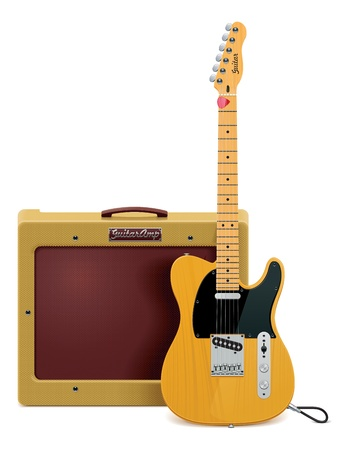
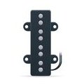
| Component | Sound* | Playability* |
|---|---|---|
| Neck - Neck Profile | + | ++++ |
| Neck - Neck Nut Width and Nut Slot Spacing | - | +++ |
| Body - Form | + | ++++ |
| Body - Bridge Form and Material | + | ++ |
| Electronics - Pickup Properties | ++++ | - |
| Electronics - Wiring Options | +++ | - |
| Strings | ++ | ++ |
| Scale Length | + | + |
| Woods (Body, neck and fretboard) | + | + |
*influence ( “-” stands for little, “++++” stands for very strong)
For example, for building a solid-body ‘jazz-sounding’ guitar you have to choose (top down by importance):
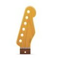
Neck thickness, neck width, neck contour and fret wire size affect playability and are a matter of personal taste. Important for good playability is balanced interaction of these components. Thicker neck often creates warmer tone.
usacustomguitars.com/necks - many neck shape and thickness combinations
musikraft.com - additional information for understanding of neck features.
Neck Profile is the combination of contour (C, U, V , asymmetrc) and thickness (.0750" - 1")
| Contour | Thickness | Warmoth* | Fender* | Gibson* |
|---|---|---|---|---|
| D | thin | Wizard | D Shape | |
| C | thin/medium | Standard Thin | C Shape (AM Std) | Traditional C |
| C | medium | 59 Roundback | Deep C | Round C (1959 LP) |
| U | thick | Fatback | U Shape (Vintage Tele) | |
| V | thick | Boatneck | V Shape (Vintage 52 Tele) | |
| asymmetrisch | medium | Wolfgang | Modern C |
*warmoth - Warmoth Neck Profiles
*fender - see “NECK SHAPE” Filter
*gibson forum - Gibson Neck Profiles
| Category | Neck Nut Width | e1/E6 |
|---|---|---|
| many Fenders from Japan | 41 mm (1-5/8") | approx. 34 mm |
| Standard | 42,9 mm (1-11/16") | approx. 35 mm |
| Acoustic analog | 44,5 mm (1-3/4") | 35 mm till 37,5 mm |
| Superwide (Warmoth) | 48 mm (1-7/8") | approx. 40 mm |
The real e1 to E6 string spread can be controlled not only through nut width, but also by slot spread in the nut. For example, 44.5 mm wide nut can have e1 to E6 distance between 35 and 37.5 mm.
| Category | String spacing | e1/E6 | e1 to edge | Neck nut width |
|---|---|---|---|---|
| Narrow string spread | 7 mm | 35 mm | 4.75 mm | 44,5 mm (1-3/4") |
| Medium string spread | 7.3 mm | 36.5 mm | 4 mm | 44,5 mm (1-3/4") |
| Wide string spread | 7.5 mm | 37.5 mm | 3.5 mm | 44,5 mm (1-3/4") |
Most guitar parts manufacturer adopted Fender’s® neck heel and neck pocket dimensions:
These dimensions are not a standard. Only careful measurement ensures that your parts will be compatible.
Strat necks have a rounded base to their heel and Tele necks have a squared-off base to their heel, which makes it difficult to interchange the two types of necks across various bodies.
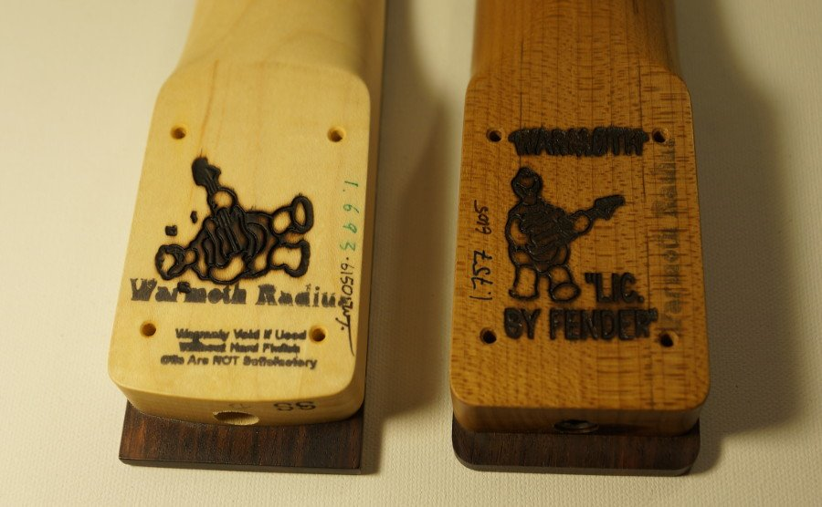
Standard Fender heel mounting is done with 4-Bolt Holes - 1/8" (3mm) diameter (spread of 2" x 1-1/2").
Smaller radius means a more rounded shape.
youtube.com - understring radius gauges - video demonstration of three different gauges used for guitar setup and fretwork: standard, notched and understring.
| Title | Width | Height | Example |
|---|---|---|---|
| Small | narrow | low | vintage Fender |
| Medium | narrow | high | many Martins |
| Medium Jumbo | wide | low | many Gibsons |
| Jumbo | wide | high | moderne Fender |
| High Jumbo | wide | very high | many Ibanez |
lutherie.net - provides an excellent manufacturer/sizes overview.
Small holes can be enlarged with a sunk. Big holes can be retrofited by adapter bushings.
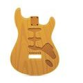
The sound of electric guitar depends mainly on the vibration behavior of the string itself and the reproduction characteristics of the pickup. The vibration behavior of the string depends (very little) on wood. The body itself is very thick compared to the neck, that is why the body wood type and form have very limited influence on the sound of electric guitar.
music.stackexchange.com - how much does electric guitar’s body physics affect the tone and playability.
Strat Vintage, Narrow & Standard
Sites holes ...o.o.o.o.o.o...
Bridge holes ..o.....o.....o..
| Model | E/e | Sites holes Ø | Sites holes distance | Bridge hole Ø | Bridge holes distance |
|---|---|---|---|---|---|
| Strat Vintage | 57 mm (2 1/4") | 3.18 mm (0.125") | 10.5 mm (0.413") | 3 mm (1/8") | 21 mm (.827") |
| Strat Vintage Narrow | 54 mm (2 1/8") | 4.78 mm (0.188") | 10.5 mm (0.413") | 3 mm (1/8") | 21 mm (.827") |
| Strat Standard | 52.83 mm (2.08") | 3.18 mm (0.125") | 11.3 mm (0.446") | 3 mm (1/8") | 22.6 mm (.89") |
Schaller Flat Mount
Bridge holes ...o.....o.....o...
| Model | E/e | Bridge hole Ø | Bridge holes distance | Dimensions (LxWxH) |
|---|---|---|---|---|
| Schaller 47X | 51 mm - 55,5 mm | 3.18mm (0.125") | approx. X | 73 x 49 x 12(15) mm |
Tele Vintage Tele Standard
Bridge holes ..o...o...o...o.. Sites holes ...o.o.o.o.o.o...
Sites holes ...o.o.o.o.o.o... Bridge holes ..o.....o.....o..
| Model | E/e | Sites holes Ø | Sites holes distance | Bridge hole Ø | Bridge hole distance |
|---|---|---|---|---|---|
| Tele Vintage | 54 mm (2 1/8") | 3.18 mm (0.125") | 10.9 mm (.429") | 3 mm (1/8") | 21.6 mm (.85") |
| Tele Standard | 54 mm (2 1/8") | 3.18 mm (0.125") | 10.5 mm (0.413") | 3 mm (1/8") | 32.4 mm (1.267") |
Vintage
Bridge holes ..o..o..o..o..o..o..
| Model | E/e | Holes distance | Holes Ø |
|---|---|---|---|
| Mexico Strat | 52,4 mm (2 1/16) | 52,4 mm (2 1/16) | 3 mm (1/8") |
| Vintage | 56,36 mm (2 7/32") | 55,9 mm (2.2") | 3 mm (1/8") |
Standard
Bridge holes ..o..........o..
| Model | E/e | Holes distance | Holes Ø |
|---|---|---|---|
| American Standard | 52,83 mm (2.08") | 55,9 mm (2.2") | 9,5 mm (.375") |
| Floyd Rose (“recessed”) | 53 mm (2-3/32") | 74 mm (2.913") | 9,91 mm (.390") |
| Schaller 2000 | 53,5 mm | 56 mm | 10 mm |
| Schaller vintage | 53,5 mm | 74,3 mm | 10 mm |
| Wilkinson (“recessed”) | 54 mm (2-1/8") | 55,9 mm (2.2") | 9,7 mm (.382") |
Tune-O-Matic Recessed Tune-O-Matic "Strings through the body"
Tailpiece ..........o......
Tailpiece ....o............ ....o.o.o.o.o.o...
Bridge ..o..........o... ..o............o..
| Model | E/e | Bridge | Tailpiece | Tailpiece Top | Tailpiece Bottom | Tailpiece Ø |
|---|---|---|---|---|---|---|
| Tune-O-Matic | ca. 52 mm* | 74 mm (2.91") | approx 82 mm* | 38 mm (1.49") | 41 mm (1.61") | approx. 11 mm (0.44") |
Instead Tailpiece - there may be “strings through the body” drillings.
callahamguitar.com - technical specifications of some coustom parts.
| Description | Av.length/width/depth* | Pickup Frames Design |
|---|---|---|
| Single Coils Strat | - | |
| Humbucker | - | Flat, Curved, High(bridge), Low(neck) |
| Wide Humbucker** | - | Flat, Curved, High(bridge), Low(neck) |
| Mini Humbucker | - | |
| Tele Neck | - | |
| Tele Bridge | - | |
| P90 | - | |
| Lipstick Tube | - | |
| Jazzmaster | - |
*Exact specifications can be found on the manufacturer’s website like:
bareknucklepickups.co.uk - dimensions
**Wide Humbucker (same as Seymourduncans “Trembucker” or Dimarzios “F-spaced Hambucker”) can be used for guitars with larger sting distance with standard “Humbucker Routing”. Measure from the middle of the high string to the middle of the low string, directly over the pickup. If the distance is greater than two inches or 50mm, go for a Wide Humbucker.
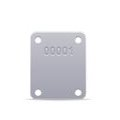
Tuning Machines Options:
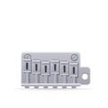
Guitar bridge has large influence on playability (mainly through string spacing). Wider string spacing is better for finger-picking style, narrow spacing gives easier control when playing leads with distorted tone. Bridge Routing chapter above describes common bridge categories with string spacing specification.
Bridge form and material have also some influence on sound.
Good manufacturers provide detailed product information on their pages:
ABM - indicates that Bell Brass and Steel shape the guitar sound with character, while Aluminum acts largely neutral in the transfer of tone.
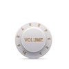
There are 3 common styles of knobs:
philadelphialuthiertools.com - Choosing the correct knob for your guitar or bass.
For each screw, the hole must be pre-drilled to the core diameter (not outer diameter)
Electronics exerts greatest influence on the overall sound of a solid-body electric guitar.
buildyourguitar.com - The Secrets of Electric Guitar Pickups by Lemme - “If you know the resonant frequency and height of the resonant peak, you know about 90 percent of a pickup’s transfer characteristics. Some other effects cannot be described using this model, but their influence is less important”.
Frequency response of a magnetic pickup may look like this 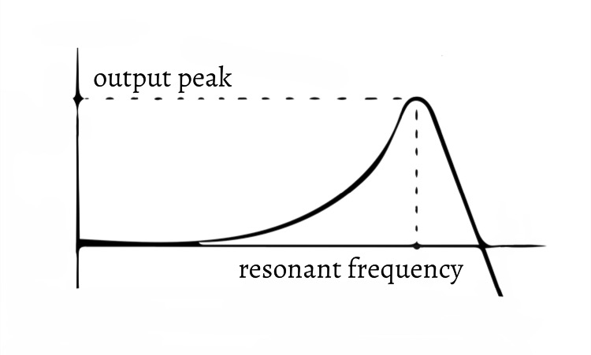
| Sound group | Resonant frequency | Resonant peak | Example Pickup |
|---|---|---|---|
| bright | 3 - 6kHz | high peak | Fender single coils |
| powerful | 2 - 3kHz | medium high peak | Gibson PAF |
| mellow | 1.5 - 2kHz | low peak | Rolling back tone pot |
Following topics change resonant frequency and resonant peak:
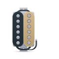
seymourduncan.com - pickup selector
dimarzio.com - pickup picker
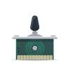
| Effect | Pot | Push/Pull or Mini DPDT(ON/OFF/ON)* |
Mini DPDP(ON/ON) |
Mini DPDP(ON/ON/ON) |
X-Way-Blade Megaswitch |
Rotary Switch. |
|---|---|---|---|---|---|---|
| volume | y | -/y¹ | - | - | - | - |
| tone | y | -/y¹ | - | - | - | y³ |
| series/parallel | - | y | - | y | y | y |
| coil split | - | y | y | y | y | y |
| series/parallel & coil tap | - | y² | y² | y² | y² | - |
| phase switch | - | y | y | y | y | y |
| pickup switch | - | y | y | y | y | y |
* switch owerview:
DPDT (ON/OFF/ON): DPDT (ON/ON): DPDT (ON/ON/ON):
0 X X | 0 0 0 | X X 0 0 X X | X X 0 0 X X | X X 0 | X X 0
0 X X | 0 0 0 | X X 0 0 X X | X X 0 0 X X | 0 X X | X X 0
‘¹’ DPDP(ON/OFF/ON) available as “Mini-switch” oder “Push/Push-Pot” for volume and tone control
‘²’ can be done by 4 Push/Pull pots, 4 Mini-switch (as SD “triple shot”) or by 5-Way blade megaswitch
‘³’ c-switch/varitone - Rotary switch for different pots
open.guitars (german) - Hambucker Conductor/Coils switching options.
More wiring schemas from:
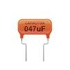
| Sound group | Pot | Cap | Examples |
|---|---|---|---|
| standard hambucker | 500K | 0.047mF | most hambucker equiped guitars |
| bright | 500K | 0.022mF | some guitars (U.S. FAT Tele) |
| brighter | 500K | 0.01mF | some custom models |
| brightest | 1M | 0.01mF | some custom models |
| standard singele coils | 250K | 0.022mF | most strat & tele models |
| jazzy | 250K | 0.047mF | some teles (ASAT BluesBoy) |
http://www.planetz.com/guitar-tone-capacitors-material-types - comparison of tone capacitor material types and capacitance values.
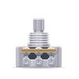
| Group | Pot body Ø | Bushing Ø | Bushing length | Shaft length | Example |
|---|---|---|---|---|---|
| standard | 24 mm | 8 mm | 10 mm | 19 mm | most fender guitars |
| mini | 17 mm | 7 mm | 10 mm | ‘>’ 17 mm | many jazz guitars |
| long | 24 mm | 8 mm | 20 mm | 27,5 mm | most Gibson LP guitars |
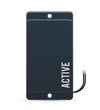
Active Electronics tries to reduce dependancy from the shielded cable and amp input impedance. However, that needs power to operate, and that’s its biggest drawback.
Custom Buffers (german) - used to decouple the guitar electronics from the sound influencing effects on the shielded cable.
Depending on following options your sound will be more bright or more mellow:
Most manufacturers use following naming convention to describe tension of string set:
| Name | ‘e’ site approx. | ‘E’ site approx. |
|---|---|---|
| Extra-Light | .008 | .039 |
| Light | .009 | .042 |
| Regular | .010 | .046 |
| Medium | .011 | .052 |
| Jazz | .012 | .054 |
| Baritone | .013 | .056 |
There are also other hybrid sets available - like “Light Top/Heavy Bottom” and “Balanced Tension” combinations.
daddario.com - you can choose between bright and mellow sounding electric strings.
ghsstrings.com - also bright vs mellow overview, and tension guide (pdf)
thomastik-infeld.com - good jazz and blues strings
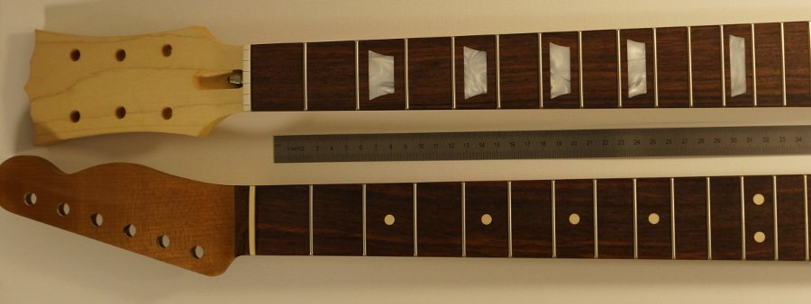
A guitar’s scale length is length of string between the nut and the bridge.
Scale has a relatively low impact on sound and playability of the guitar. (Compared with other parameters such as strings or pickups).
Longer scale length sound and playability characteristics:
Shorter scale length sound characteristics:
Common Scale Length:
| Woods | Sound¹ | Weight² | Used for³ | Looks |
|---|---|---|---|---|
| Alder | bright | medium | T/B | bright, simple |
| Ash | bright | medium | T/B | bright, simple |
| Basswood | neutral | light | B | bright, simple |
| Bubinga | bright | medium | T/B/N/F | red, often grained |
| Ebony | bright | heavy | N/F | dark |
| Maple | very bright | heavy | T/B/N/F | bright, often grained |
| Koa | warm | medium | T/B/N | dark, grained, attractive |
| Korina | warm | medium | T/B/N | grained, attractive |
| Mahogany | warm | medium | T/B/N | red |
| Poplar | neutral | medium | B | bright, simple |
| Rosewood | warm | medium | T/B/N/F | dark |
| Sitka Spruce | neutral | light | T/B | bright, simple |
| Swamp-Ash | neutral | light | T/B | bright, attractive |
| Walnut | bright | medium | T/B/N | gray, attractive |
| Wenge | bright | heavy | T/B/N/F | dark |
¹ Sound: the diagram for effects on tone stands mainly for acoustic instruments and NOT for solid body guitars, where other components have much larger impact on sound. Thus, a mahogany electric guitar can sound bright despite the representations below.
² Weight may vary for the same variety.
³ Used for: T - Body Top | B - Body | N - neck | F - fretboards

frudua.com - graphical examples for body and neck woods showing relationship between wood hardness, its density and tone.